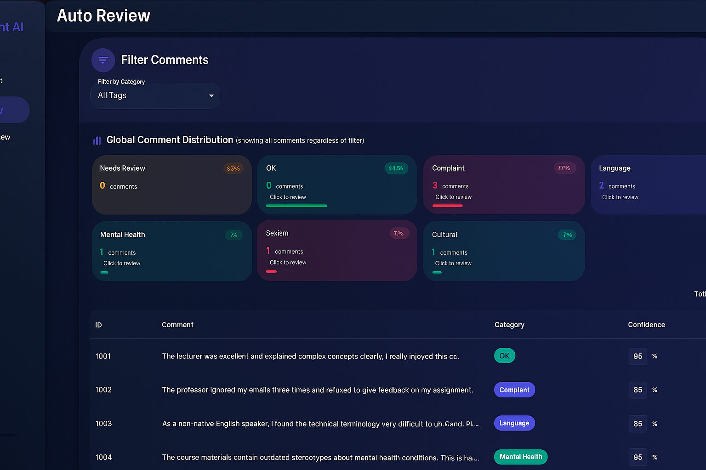
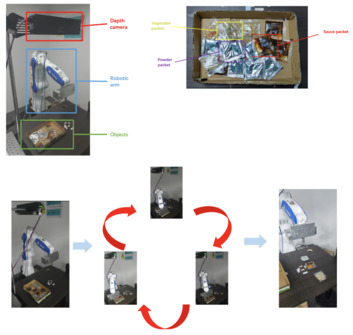

|
Xuanzhi Liu 刘炫志 I received my Master's degree in Information Technology from the University of New South Wales (UNSW) in June 2025. During my time at UNSW, I conducted research under the supervision of Dr. Zhengyi Yang and Dr. Junbum Kwon. Earlier, I interned at the Research Center for Machine Vision at SIAT, Chinese Academy of Sciences, where I was advised by Prof. Zhan Song. I obtained my B.Eng. degree in Computer Science from Guangdong University of Finance & Economics (GDUFE) in 2023. |

|


Recent News
|
Research Interests
|
Publications & Projects*: equal contribution; †: corresponding author(s) |
|
 |
AI Comment Moderation - RAG and Classification modelling
Yinglong Cui, Hang Pan, Xuanzhi Liu*, Zhongwei Yang*, Jianhong Liu*, Xiaotong Zhang*, Master Graduation Project (High-Distinction) [Proposal] [Report] This project introduces an AI-based comment moderation system that combines Retrieval-Augmented Generation (RAG) and GPT-based classification. By retrieving similar historical comments from a local vector database (ChromaDB), the system enhances classification without requiring large labeled datasets. It features a modular architecture with FastAPI backend, React frontend, and an AI Agent module for advanced multi-step reasoning. Key functionalities include batch processing, manual review support, and transparent classification logic. Evaluation results show strong performance (F1 score 87.3%), usability, and reliability. Future improvements target scalability, user customization, and enterprise-level integration. |
|
 |
A Food Package Recognition and Sorting System Based on Structured Light and Deep Learning
Xuanzhi Liu, Jixin Liang, Yuping Ye, Juan Zhao, Zhan Song†, JCRAI 2023 Oral Outstanding Undergraduate Thesis [Page] We designed a sorting system for food packaging using deep learning algorithms and structured light 3D reconstruction technology. Using a pre-trained MASK R-CNN model to recognize the class of the object in the image and get its 2D coordinates, then using structured light 3D reconstruction technique to calculate its 3D coordinates, and finally after the coordinate system conversion to guide the robotic arm for grasping. |
Education |
|
University of New South Wales (UNSW), Australia M.IT. in Artificial Intelligence
Sep. 2023 - June. 2025 |
|
Guangdong University of Finance & Economics (GDUFE), China B.Eng. in Computer Science and Technology Sep. 2019 - Jun. 2023 |
Experiences |
|
Shenzhen Institutes of Advanced Technology, Chinese Academy of Sciences Visiting Student
Dec. 2024 - Feb. 2025, 2 months July. 2022 - April. 2023, 10 months Supervisor: Prof. Zhan Song
|
|
© Xuanzhi Liu. Last update: . |